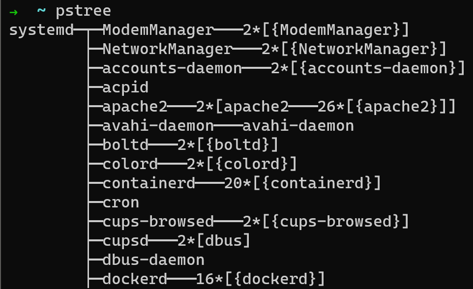
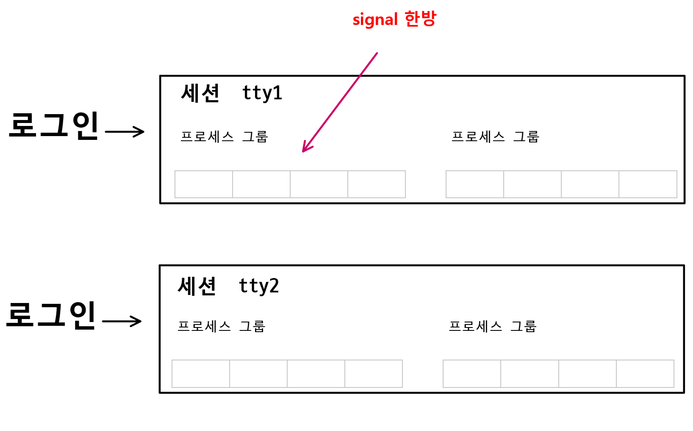
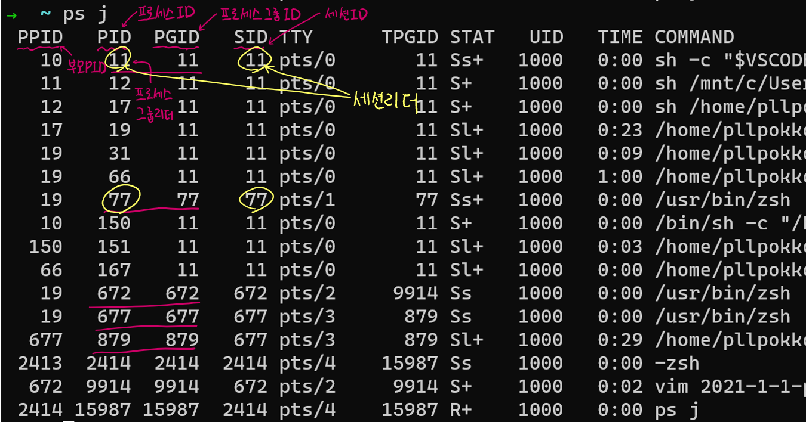
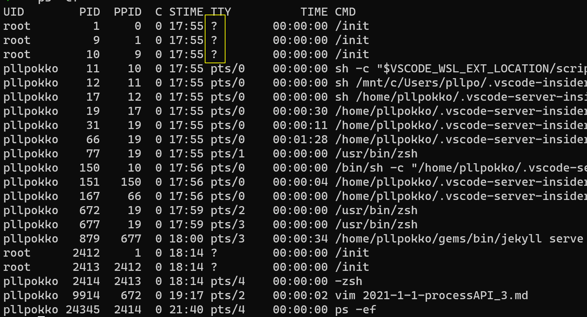

프로세스 API <3> 프로세스 관계, pstree, getpid(), 프로세스그룹 setpgid(), 세션 setsid(), 대몬 프로세스
pstree 명령
- 리눅스에서는 어떠한 프로세스도 fork() & exec()나 비슷한 API로 생성된다.
프로세스를 부모/자식 관계로 이어 가면 하나의 트리 구조로 구성할 수 있다. - pstree 명령은 프로세스 부모/자식 관계 트리를 표시한다.

- systemd: 부팅 시 커널이 직접 실행, 모든 프로세스의 시작
- getty 프로그램 시작하는 역할도 함
getpid():2, getppid():2
#include <sys/types.h>
#include <unistd.h>
pid_t getpid(void);
pid_t getppid(void);
- 기능
- getpid(): 자신의 PID 반환
- getppid(): 부모의 PID 반환
다른 프로세스 정보
/proc/[PID]에서 얻을 수 있다.
프로세스 그룹과 세션

- 프로세스 그룹: 셸때문에 존재한다.
- 셸을 사용해서 여러 개의 명령어를 파이프로 연결해 기동했다고 하자.
- 파이프로 연결된 명령어 중 하나에 문제가 있어 ctrl+c로 중단했다면, 프로세스 중 어떤 것이 종료되어야 할까?
- 답은 파이프로 연결된 모든 프로세스가 멈춰야한다.
- 파이프로 연결된 프로세스 집단을 하나의 프로세스 그룹으로 통합하여 그룹의 프로세스에 시그널 한방으로 관리
- 셸을 사용해서 여러 개의 명령어를 파이프로 연결해 기동했다고 하자.
- 세션: 사용자의 로그인 ~ 로그아웃까지 흐름을 관리하기 위한 개념
- 로그인 셸을 기점으로 사용자가 동일 단말로 부터 기동한 프로세스를 하나로 통합할수 있다.
- 하나의 세션은 복수의 프로세스 그룹을 통합하는 형태
- 세션과 연결된 단말을 프로세스의 제어 단말(controlling terminal)이라고 한다.
프로세스 그룹과 세션 리더
ps j로 프로세스 그룹, 세션을 볼 수 있다.

- PPID: 부모 프로세스 ID
- PID: 프로세스 ID
- PGID: 프로세스 그룹 ID
- SID: 세션 ID
- 프로세스 그룹 리더: 처음으로 그 프로세스 그룹을 만든 프로세스가 리더
- PID == PGID
- 세션 리더: 처음으로 그 세션을 만든 프로세스가 리더
- PID == SID
- 리더: 특별히 권한이 강한 것은 없고, 새로운 프로세스 그룹, 세션을 만들 수 없는 프로세스다.
대몬 프로세스
ps -ef: 시스템에서 작동하고 있는 모든 프로세스표시

- 대몬 프로세스: TTY에 ? 되있는 프로세스들이 있는데,
제어 단말이 없는 프로세스이다.- 서버로 동작하기 위해서~!
- 특정 단말로 로그인해 서버를 돌리다가 로그아웃 시, 그 세션 프로세스들 모두 종료되기 때문에 대몬 프로세스를 둔다.
- 대몬 프로세스가 되기 위한 조건
- 고아 프로세스가 되어야 한다.
- 대몬 프로세스는 완전히 독립된 프로세스다.
- 표준 입력, 출력, 에러를 닫아야한다.
- 대몬 프로세스와 상호작용은 IPC로만 할 것
- 터미널을 가지지 않는다.
- 단말 X
- 고아 프로세스가 되어야 한다.
대몬 프로세스 만들기
#include <stdio.h>
#include <stdlib.h>
#include <string.h>
int main(){
int pid;
int i;
i=1000;
pid=fork();
if(pid==-1){
perror("fork error\n");
exit(0);
} else if(pid==0){
// 자식 프로세스가 실행시키는 코드
printf("자식: 내 PID는 %d\n", getpid());
/* 표준 IO, ERR 닫기 */
close(0);
close(1);
close(2);
/* setsid()를 통해서 자신만의 독립적인 환경 만든다.
기존의 환경이 리셋되면서, 터미널이 사라진다. */
setsid();
while(1){
printf("--->%d\n", i);
i++;
sleep(1);
}
} else {
// 부모 프로세스가 실행시키는 코드
/* 대몬 프로세스는 고아가 되어야한다.
따라서, 부모 프로세스는 바로 종료 */
printf(" 부모 : 내가 낳은 자식의 PID는 %d\n", pid);
sleep(1);
printf("부모 종료\n");
exit(0);
}
return 0;
}
$ ps -efjc | grep daemon
UID PID PPID PGID SID CLS PRI STIME TTY TIME CMD
yundream 8282 1 8252 8252 TS 24 00:43 ? 00:00:00 ./daemon
- PPID가 1이고 새로운 Session ID 8252인 대몬 생성됨
setpgid():2
#include <unistd.h>
int setpgid(pid_t pid, pid_t pgid);
- 기능: 새로운 프로세스 그룹만듬
| return | value |
|---|---|
| 성공 | 0 |
| 실패 | -1 errno set |
| parameter | Description |
|---|---|
| pid | 설정할 pid 0 지정 시, 현재 프로세스가 대상 |
| pgid | 위 프로세스에게 부여할 프로세스 그룹 ID 0 지정 시, 현재 PID가 PGID로 사용 즉, 자신이 리더가 되어 새로운 프로세스 그룹을 만들고 싶은 경우 (0, 0) 설정 |
setsid():2
#include <unistd.h>
pid_t setsid(void);
- 기능: 새로운 세션을 만들고 스스로 세션 리더, 그 세션에 최초의 프로세스 그룹 작성하고 프로세스 그룹 리더가 된다.
- 만들어진 세션은 제어 단말을 가지지 않는다.
- 즉, 세션 리더가 되는 동시에 대몬이 되는 것이다.
- 주의: 현 프로세스가 프로세스 그룹 리더라면 setsid()는 실패
| return | value |
|---|---|
| 성공 | 세션ID(일반적으로 현 프로세스 PID) |
| 실패 | -1 errno set |